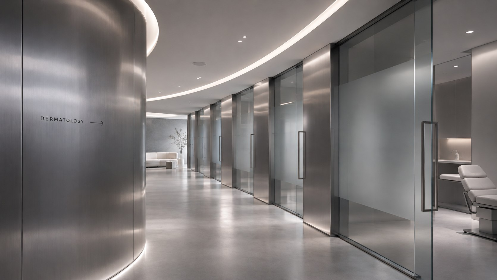
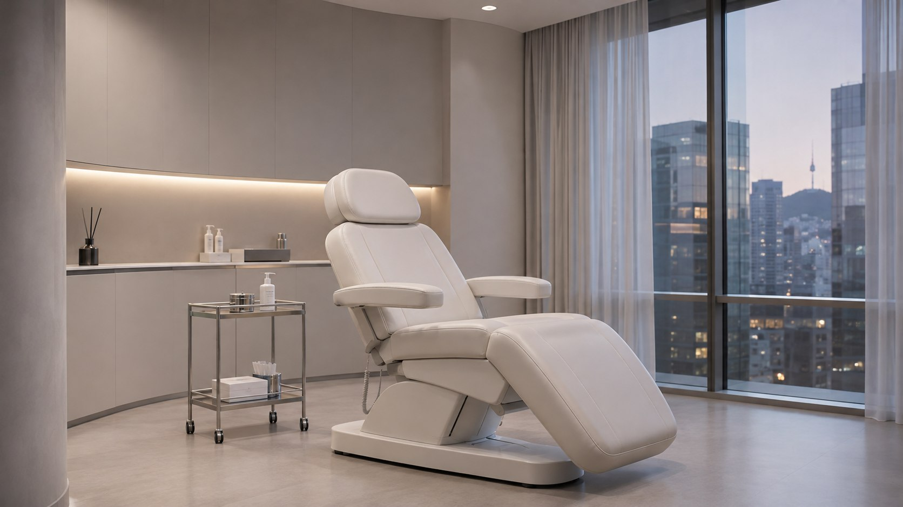
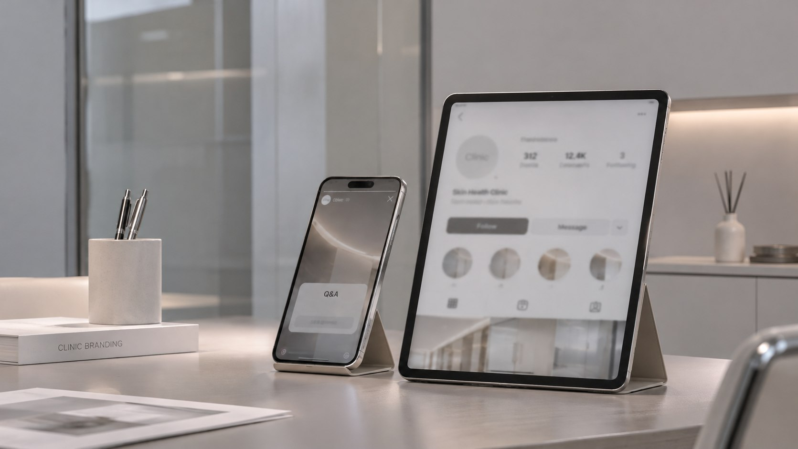
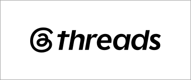
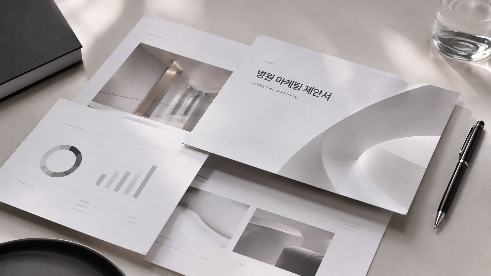

INSIGHTS
병원광고, 돈을 더 쓰기 전에
의심해볼 것이 있습니다.
숫자를 늘리기 전에, 숫자가 말하는 의미부터 읽어야 합니다.
핵심만 읽는 7분 아티클
ISSUE01
지금 잘되는 병원광고, 앞으로도 괜찮을까요?
"예전에는 이 광고 하나로 충분했는데, 이제는 돈을 더 써도 문의가 늘지 않네요."
"지금은 문의가 잘 들어오지만, 앞으로도 이 광고만 믿고 가도 될지 고민입니다."
원장님도 비슷한 생각을 해보셨을 겁니다.
VOICES
-
익명 · 13일 전
광고비는 계속 올리는데 문의는 그대로예요.. 원장님은 또 예산 늘리라고 하시고 진짜 답답하네요
-
익명 · 2주 전
블로그만 하면 예약까지 이어진다고 하시는데 그게 그렇게 간단한 일인가요ㅜ 저흰 문의만 오고 예약이 안 돼요
잘되던 병원광고의 반응이 줄면 당장 다른 방법을 찾아야 하나 싶고, 지금 잘되고 있어도 옆 병원이 새로운 광고를 시작했다는 이야기를 들으면 괜히 마음이 조급해집니다.
그렇다고 효과가 있는 광고를 바꾸자니 아깝고, 그대로 두자니 뒤처지는 것 같아 불안하죠.
문제는 고민 끝에 다른 대행사의 이야기를 들어봐도, 돌아오는 답은 늘 똑같다는 점입니다.
지금 광고가 왜 흔들리는지 짚어주기보다 "요즘은 이 매체가 대세니 새로 시작해 보자"는 말뿐이니 고민은 쉽게 풀리지 않습니다.
대행사가 말하는 '잘되는 광고'와
원장님이 체감하는 '잘되는 광고'는 기준부터 다릅니다.

매달 노출량이나 클릭 수가 늘어난다는 보고를 받으면 반가우면서도, 막상 병원 현장에서는 그만큼의 변화가 체감되지 않아 답답할 때가 있습니다.
결국 광고가 잘되고 있는지 판단하려면, 처음에 이 광고에 기대했던 '목적'대로 움직이고 있는지를 봐야 합니다.
만약 우리 병원을 알리는 '노출' 자체가 목적이었다면 사람들의 눈에 많이 띄는 것만으로도 충분할 수 있습니다.
하지만 특정 진료를 알리고 그 환자를 데려오는 것이 목적이었다면, 당연히 그 진료로 문의와 예약이 몰려야 진짜 성과라고 할 수 있겠죠.
예를 들어 원장님은 고단가 진료를 알리고 싶어 광고비를 썼는데, 정작 문의는 가벼운 기본 진료에만 몰려 있다면 어떨까요?
전체 문의 숫자는 늘었으니 대행사에서는 광고가 잘 돌아간다고 말하지만, 애초에 원했던 역할을 하지 못하고 있으니 병원 입장에서는 답답할 수밖에 없습니다.
반대로 원장님이 의도했던 목적이 흔들림 없이 달성되고 있다면, 남들이 새로운 매체를 시작한다고 해서 지금 잘 작동하는 광고까지 불안해하며 바꿀 필요는 없습니다.

결국 병원광고를 바꿀지 유지할지 결정하는 기준은, 단순한 숫자가 아니라 ‘지금 광고가 제 역할을 하고 있는가’입니다.
이 기준이 분명하지 않으면 반응이 조금만 떨어져도 불안한 마음에 기존 광고를 전부 접고 새 광고부터 덜컥 시작하게 됩니다.
하지만 전체 문의가 줄었더라도 그동안 애써오신 모든 광고가 한꺼번에 잘못된 것은 아닙니다.
여전히 목적에 맞는 환자를 데려오는 광고도 분명 있는 만큼, 결과가 아쉽다는 이유만으로 판을 전부 갈아엎어 잘되던 것까지 날려버릴 필요는 없습니다.
무작정 새로운 광고를 더하기보다, 지금 하고 있는 광고 중 '그대로 유지해도 좋은 것'과 '손을 봐야 할 것'을 먼저 나눠보셨으면 합니다.
그 기준만 명확히 세워두셔도 불필요한 비용 낭비 없이 지금 우리 병원에 꼭 필요한 방향을 훨씬 흔들림 없이 결정하실 수 있을 것입니다.
ISSUE02
병원을 찾는 환자, 실제로는 "여기서" 찾고 있습니다.
우리 병원에서 꾸준히 광고하는 곳이 있다면, 그곳을 중심으로 환자의 반응을 보게 됩니다.
문의가 들어온 경험도 있고, 그동안 쌓아온 콘텐츠도 있으니까요.
문제는 우리 병원이 익숙한 곳과, 지금 환자들이 실제로 움직이는 곳은 다르다는 점입니다.
병원이 광고하는 방식은 그대로인데,
정작 환자들이 병원을 찾는 곳은 달라지고 있습니다.
오픈서베이 조사에서는 기존 검색 서비스와 함께 생성형 AI를 검색에 활용하는 변화가 나타났습니다.
검색 서비스별 최근 3개월 내 이용 경험률
| 검색 서비스 | 2025년 3월 | 2025년 12월 |
|---|---|---|
| 네이버 | 85.3% | 81.6% |
| ChatGPT | 39.6% | 54.5% |
| Gemini | 9.5% | 28.9% |
출처: 오픈서베이, 「AI 검색 트렌드 리포트 2026」 (2026년 발행), 검색 서비스 이용 현황 중 일부 인용.
조사 대상: 전국 10~50대 남녀 각 시점 1,000명 중 검색 서비스 이용자 / 단위: %
※ 일반 소비자 대상 조사로, 병원 탐색에 한정된 결과는 아닙니다.
그렇다고 지금 하던 광고를 줄이고 당장 새로운 곳으로 옮겨가라는 뜻은 아닙니다.
다만 환자가 정보를 찾는 곳은 달라지고 있는데, 병원은 한 곳에서만 기다리고 있어도 될지 생각해 보자는 것입니다.
지금 블로그에서 문의가 잘 들어온다면 당연히 계속 가져가야 합니다.
하지만 처음부터 영상이나 SNS로 정보를 접하는 사람, AI나 커뮤니티에 먼저 물어보는 사람까지 블로그 하나로 다 만날 수는 없습니다.
한 매체에서 성과가 난다는 것과, 그 매체 하나면 충분하다는 것은 다른 이야기인 셈이죠.
게다가 환자가 병원을 '처음 알게 되는 곳'과,
실제로 내원을 '확신하는 곳'은 다릅니다.
광고 하나를 잘 만들었다고 해서 환자가 그 자리에서 바로 예약 버튼을 누르지는 않습니다.
오히려 광고를 보고 관심이 생길수록, 다른 매체에서도 다시 검색해 보기 시작합니다.
우연히 본 콘텐츠로 흥미가 생겼다면, 예약하기 전에는 블로그의 진료 설명을 찾아 읽고 홈페이지에서 의료진까지 확인해 보는 식이죠.
결국 블로그 하나만 열심히 파거나, 반대로 SNS 광고만 무작정 늘리는 방식으로는 환자가 움직이는 길목에 빈틈이 생길 수밖에 없습니다.

그렇다고 단순히 매체 개수만 여러 개 늘려놓는다고 해서 이 흐름이 저절로 만들어지지도 않습니다. SNS에서는 가벼운 이벤트만 외치고, 정작 검색해서 들어간 블로그에는 전혀 다른 이야기가 적혀 있다면 환자는 오히려 혼란스러울 뿐입니다.
그래서 정말 필요한 것은 매체의 개수만 늘리는 일이 아닙니다.
환자가 처음 관심을 갖는 순간부터 마지막에 검색하며 확신을 얻는 순간까지, 어떤 매체를 보더라도 우리 병원만의 강점이 한목소리로 전달되도록 연결하는 일입니다. 유행하는 매체에 병원을 억지로 끼워 맞추는 것이 아니라, 지금 우리 병원에 꼭 필요한 매체들을 골라 하나의 흐름으로 맞물려 돌아가게 해야 합니다.
ISSUE03
잘되는 병원광고, 그대로 따라 하기 전에 보세요.
여러 매체를 활용해야 한다고 해도, 막상 시작하려면 고민이 됩니다.
예산은 정해져 있고, 새로운 광고를 할 때마다 콘텐츠를 준비하고 운영할 시간도 필요하니까요.
이것저것 시도하기보다 효과를 기대할 수 있는 방법부터 선택하고 싶으실 겁니다.
그럴 때 다른 병원의 성공 사례는 꽤 설득력 있게 다가옵니다.
같은 진료과의 병원에서 문의가 늘었다거나, 새로운 SNS에서 반응이 좋다는 이야기를 들으면 '우리도 해볼 만하지 않을까' 싶어지죠.
최근에는 스레드를 보고 “우리 병원도 시작해보면 어떨까요?”라고 문의를 주시기도 합니다.

이런 화면, 보신 적 있으실 겁니다.
의료진이 올린 글에 댓글이 달리고, 진료에 관심을 보이는 사람들이 모이면 눈길이 가죠.
지금 하고 있는 광고에서는 만나지 못했던 환자들을 만날 수 있겠다는 기대도 생깁니다.
다만 원장님이 기대하시는 건, 우리 계정에도 댓글이 많이 달리는 것만은 아닐 겁니다.
그 관심이 병원을 알아보고 진료를 고민하는 데까지 이어지기를 바라실 테니까요.
의료진의 일상과 생각에 공감하는 반응이 많은 병원이라면, 그동안 꾸준히 소통하며 쌓아온 관계가 바탕에 있을 수 있습니다.
그런데 우리는 특정 진료의 상담 문의를 늘리는 것이 우선이라면, 비슷한 형식의 글을 올리는 것만으로 원하는 결과를 기대하기는 어렵습니다.
스레드가 맞지 않는다는 뜻은 아닙니다.
그 병원의 운영 방식을 그대로 가져오기보다, 우리 병원이 얻고 싶은 결과에 맞게 활용 방법을 정해야 한다는 뜻입니다.
그래서 스레드 운영을 문의하시면, 저희는 어떤 게시물을 보시고 관심을 갖게 되셨는지부터 이야기를 나눕니다.
그 사례에서 기대하신 것이 새로운 환자와의 만남인지, 의료진에 대한 친밀감인지, 특정 진료의 문의인지 알아야 우리 병원에서도 시도할 방향을 잡을 수 있기 때문입니다.
이렇게 목표부터 정확히 짚어보면, 같은 쓰레드라도 어떤 주제의 글로 채워야 할지, 또 기존의 다른 채널들과는 어떻게 연결해야 할지 비로소 우리 병원에 맞는 설계가 나옵니다.
원장님께서 시간과 비용을 들여 시작하시는 만큼,
"요즘 잘되는 매체입니다"에서 끝나는 것이 아니라 "우리 병원에는 이렇게 활용하겠습니다"까지 말씀드릴 수 있어야 합니다.
그 방법을 찾기 위해 저희가 함께 검토하는 주요 채널과 운영 방식 중 일부를 정리했습니다.
지금 운영하고 계신 광고와 비교하면서 보시면, 이미 잘하고 있는 부분과 더 보완할 부분을 구분하기가 조금 수월하실 겁니다.
| 구분 | 주요 역할 | 활용하기 좋은 상황 | 운영 핵심 |
|---|---|---|---|
| 브랜드 블로그 | 진료 철학 · 깊이 있는 정보로 신뢰 구축 | 검색 환자에게 확신을 심어주어야 할 때 | 환자 눈높이 설명과 원장님 기준 전달 |
| 검색 상위노출 | 고민 중인 환자의 검색 길목 선점 | 지역·진료 키워드에서 빠른 유입이 필요할 때 | 검색 의도에 맞는 글 |
| 카페 바이럴 | 지역 커뮤니티 내 자연스러운 인지 확산 | 동네 상권 내 입소문과 언급량이 중요할 때 | 거부감 없는 정보성 소통 ※ 위장 후기 배제 |
| 숏폼 영상 | 짧고 직관적인 영상으로 빠른 관심과 도달 확보 | 복잡한 설명보다 생생한 인상을 남기고 싶을 때 | 핵심만 짚는 전문성 전달 ※ 쇼츠·릴스 등 |
| 스레드 운영 | 일상적인 소통으로 친근감 및 인지도 확보 | 원장님의 생각과 병원 분위기를 가볍게 알릴 때 | 꾸준한 호흡과 진솔한 대화 톤앤매너 유지 |
| 메타 광고 | 새로운 잠재고객에게 신규 유입 확대 | 주력 진료나 이벤트를 빠르게 알리고 싶을 때 | 시선을 끄는 소재 기획과 랜딩 페이지 연결 |
| 해외 마케팅 | 국가별 채널에서 외국인 접점 마련 | 해외 환자 대상 홍보를 검토하고 있을 때 | 현지화 콘텐츠·상담 준비 ※ 국가별 규정 확인 |
표에 있는 매체마다 장점은 분명하지만, 남들에게 좋은 매체가 지금 우리 병원에도 가장 급한 매체라는 법은 없습니다.
새로운 광고에 예산을 쓰면 그만큼 다른 곳에 쓸 여력은 줄어들 수밖에 없기 때문에, 무작정 가짓수를 늘리기보다 지금 우리 병원에 가장 필요한 한 가지를 골라내는 기준이 먼저 서야 합니다.
그러려면 반드시 '비교'가 먼저 이루어져야 합니다.
지금 하고 있는 광고를 다듬는 것이 나을지, 아니면 새로운 매체를 여는 것이 나을지, 같은 예산이라면 어디에 힘을 실어야 가장 효율적일지부터 따져봐야 합니다.
전체적인 비교 없이 특정 매체의 장점만 듣게 되면, 결국 무엇부터 시작해야 할지 결정하기가 어려워집니다.
예를 들어 요즘 새로운 SNS 채널에 관심이 생기셨더라도, 막상 환자가 병원 이름을 검색했을 때 보여줄 기본 콘텐츠가 부족하다면 그 안쪽의 정보부터 채우는 것이 먼저입니다.
반대로 검색했을 때 확신을 줄 만한 글과 홈페이지가 이미 탄탄하게 갖춰져 있다면, 그때는 새로운 환자와 만날 수 있는 외부 채널로 예산을 넓히는 편이 훨씬 효과적입니다.
매체 자체의 장점을 따지기보다, 지금 우리 병원 상황에서 왜 다른 방법보다 이것부터 해야 하는지 그 우선순위를 먼저 짚어보셨으면 합니다.
ISSUE04
광고비와 매체를 늘려도 "소용없는 한 가지 이유."
"블로그도 하고, 메타 광고도 하고, 유튜브 쇼츠도 만듭니다."
이렇게 들으면 선택할 수 있는 방법이 많아 안심되실 수 있습니다. 한 곳에서 함께 맡길 수 있으니 편하겠다는 생각도 드실 테고요.
그런데 막상 제안서를 받아보니 블로그 몇 건, 광고 소재 몇 종, 쇼츠 몇 편만 적혀 있다면 어떨까요?
DELIVERABLES·월간 콘텐츠 제작 구성
-
블로그
주 1편× 4주
-
쇼츠
주 2편× 4주
-
광고 소재
3종× 월 2세트
무엇을 만들어주는지는 알겠는데, 그래서 우리 병원광고가 어떻게 달라지는지는 여전히 막연합니다.
여러 매체를 운영한다는 설명에서 한 걸음 더 들어가 봐야 하는 이유입니다.
같은 진료라도 블로그에서는 환자가 궁금해하는 내용을 차근차근 설명할 수 있습니다.
하지만 그 글을 짧게 줄여 광고 이미지로 만들고, 원장님이 읽는 모습으로 촬영한다고 해서 메타와 쇼츠에서도 설득력이 생기는 것은 아닙니다.
글에서는 충분히 설명하면 이해될 내용도, 광고에서는 첫 화면에서 지나칠 수 있습니다.
영상에서는 설명이 정확한데도 도입이 길어 정작 중요한 이야기까지 보지 않을 수 있고요.
내용이 틀린 게 아니라, 그곳에서 '읽히고 보일 방식'으로 기획되지 않은 겁니다.
이때 필요한 수정도 서로 다릅니다.
- BLOG
블로그는 환자가 찾는 질문에 제대로 답하고 있는지,
- META
메타는 어떤 대상에게 어떤 소재를 보여줬을 때 반응이 달라지는지,
- SHORTS
쇼츠는 어디에서 시청을 멈추고 왜 다음 내용을 보지 않는지 살펴야 합니다.
그런데 이 차이를 짚지 못하면
처방은 비슷해집니다.
글을 더 올리고, 광고비를 늘리고, 영상을 더 만드는 겁니다.
문제는 매체마다 다른 곳에서 생기는데, 해결책은 늘 더 하는 것이 됩니다.
그래서 여러 매체를 맡기실 때는 그 회사가 ‘무엇을 실행해 줄 수 있는지’와 함께, 문제가 생겼을 때 ‘무엇을 어떻게 판단해 줄 수 있는지’를 꼭 함께 보셨으면 합니다.
예를 들어 블로그 반응이 부족할 때는 단순히 발행 개수가 적은 건지, 아니면 환자가 진짜 궁금해하는 질문을 놓친 건지 구분할 줄 알아야 합니다.
메타 광고 역시 소재를 바꿔야 할지 노출 대상을 다시 잡아야 할지 짚어내야 하고, 쇼츠 조회수가 낮다고 해서 무작정 촬영 편수부터 늘릴 수는 없는 노릇입니다.
이런 판단은 그저 '병원을 잘 안다'는 것만으로 해결되지 않습니다.
반대로 매체 다루는 기술만 능숙하다고 해서 되는 일도 아닙니다.
우리 병원이 정작 어떤 진료의 문의를 늘리고 싶은지 놓쳐버리면, 엉뚱한 반응을 가져와 성과라고 보고하기 쉽기 때문입니다.
결국 각 매체를 깊이 다루는 전문성과, 병원의 목표를 정확히 읽는 기획력이 반드시 함께 움직여야 하는 이유입니다.

그렇다면 제안에도 '두 가지'가 함께 담겨야 합니다.
- 01
각 매체에서 무엇을 바꿀 것인지
- 02
그리고 왜 지금 우리 병원에서는 그 일을 먼저 해야 하는지
매체마다 할 수 있는 일을 나열하는 것과, 병원의 예산 안에서 먼저 할 일을 정하는 것은 다르니까요.
물론 때로는 광고비와 매체를 늘리는 것이 필요할 때도 있습니다.
다만 그에 앞서 이런 명확한 판단이 먼저 서 있어야, 원장님께서도 단순히 ‘광고를 더 하는 것’이 아니라 ‘무엇을 기대하고 이 비용을 쓰는지’ 납득하실 수 있습니다.
여기까지 조금 길게 말씀드렸습니다.
당장 어떤 광고를 꼭 하시라는 이야기보다는, 마케팅을 맡기실 때 비용과 제작 수량 외에도 꼭 한 번 살펴보실 기준이 있다는 말씀을 드리고 싶었습니다.
설명을 듣고도 우리 병원에 왜 이 방식이 필요한지 잘 와닿지 않는다면, 그 부분은 얼마든지 더 집요하게 물어보셔도 됩니다.
이 글은 홈페이지에 계속 남겨둘 예정입니다.
당장 결정하실 일이 없더라도, 나중에 새로운 광고를 알아보시거나 지금 하고 계신 광고를 점검하고 싶으실 때 언제든 편하게 다시 찾아보시면 좋겠습니다.
END OF ARTICLE